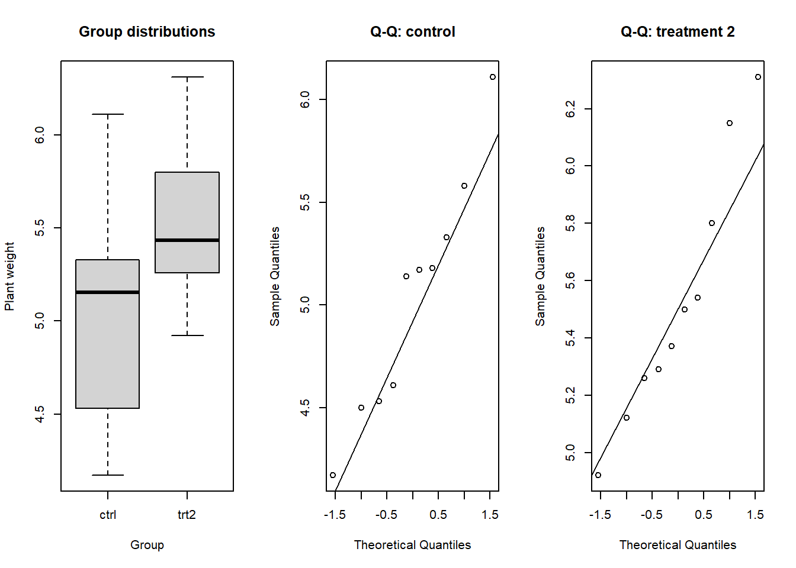
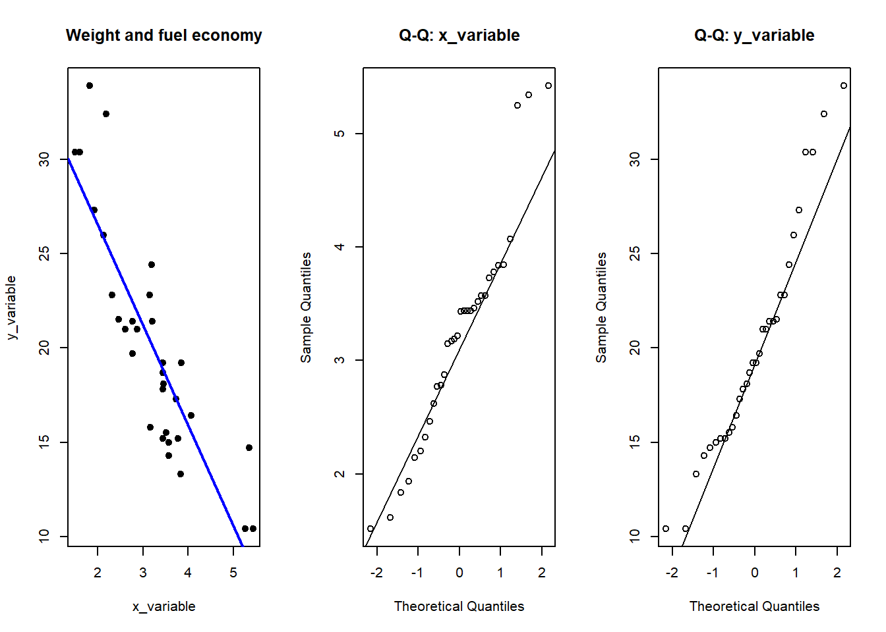

Reusable workflows for t-tests, chi-square tests, correlation and alternative tests
Author
K.J. Mhango
How to work through this notebook
Work through the sections in order. Later code cells use objects from earlier sections. During the co-coding session, take turns to lead a section.
Before you run a code cell:
Read the research question or task aloud.
Explain the role of each variable.
State the null hypothesis when one is required.
Predict what the code should produce.
Run the cell and explain the output.
Sections 1–20 show the main workflows. Sections 21–28 show alternative tests. All data are available in R or in this project. You do not need an internet connection.
The main principle remains the same throughout:
We compare what we observed with what we expect when the null hypothesis is true.
Part A: Parametric and chi-square workflows
Section 01 — Reproducible session setup
Always restart the R kernel from the notebook menu. This removes objects from an earlier analysis.
The setup cell records the R version and the operating system. It also sets a random seed. The seed makes simulated results repeatable.
Your task
Confirm that the R kernel has been restarted.
Explain what the random seed controls.
Run the cell.
Identify the R version recorded in the output.
set.seed(5025)options(digits =4)sessionInfo()
R version 4.4.2 (2024-10-31 ucrt)
Platform: x86_64-w64-mingw32/x64
Running under: Windows 11 x64 (build 26200)
Matrix products: default
locale:
[1] C
system code page: 65001
time zone: Europe/London
tzcode source: internal
attached base packages:
[1] stats graphics grDevices utils datasets methods base
loaded via a namespace (and not attached):
[1] htmlwidgets_1.6.4 compiler_4.4.2 fastmap_1.2.0 cli_3.6.3
[5] tools_4.4.2 htmltools_0.5.8.1 yaml_2.3.10 rmarkdown_2.29
[9] knitr_1.49 jsonlite_1.8.9 xfun_0.50 digest_0.6.37
[13] rlang_1.1.5 evaluate_1.0.3
The output records the R version and the operating system. This information helps another person repeat the analysis.
Section 02 — Reusable variable names
Datasets use different column names. For example, a plant response can be height, weight, yield, or biomass. Generic names let you reuse the same R code.
Use these conventions:
y_variable for a numeric response or outcome;
x_variable for a numeric explanatory variable;
categories when the analysis has one categorical variable;
category_a and category_b when the analysis has two categorical variables;
pair_id for the identifier in a paired design.
The source data stay unchanged. We use the generic names in a separate data frame.
Your task
Read each generic name and state the type of variable it should contain.
Explain why generic names make later code reusable.
Run the cell to create the naming guide.
Refer to the guide when assigning variables later.
analysis_names <-data.frame(role =c("Numeric response", "Numeric explanatory variable","Single categorical variable","First of two categories", "Second of two categories","Paired identifier"),generic_name =c("y_variable", "x_variable","categories", "category_a", "category_b","pair_id"))analysis_names
role generic_name
1 Numeric response y_variable
2 Numeric explanatory variable x_variable
3 Single categorical variable categories
4 First of two categories category_a
5 Second of two categories category_b
6 Paired identifier pair_id
The later tests use these generic names. For a new dataset, change the variable assignments. You can then reuse the test code.
A continuous response in two independent groups
Section 03 — Research context, question and dataset
The PlantGrowth dataset gives the dry weight of plants in one control group and two treatment groups. Start with the research question:
Do plants receiving treatment 2 have a different mean dried weight from control plants?
The question states what you want to learn. First, identify what one row represents. Then identify each variable type.
Read the question aloud. Then load the data and inspect its structure.
Your task
Read the research question aloud.
State what information the question asks us to compare.
Do not choose a test yet. First understand the question and the data.
Section 04 — Identify the observational unit and variable types
One row represents one plant. weight is the continuous response variable. group is the categorical explanatory variable.
The question compares treatment 2 with the control group. We therefore remove treatment 1. Each group contains different plants. The two groups are independent.
Summarise the variables before you state the null hypothesis or choose a test.
Your task
Identify what one row represents.
Classify weight and group by variable type.
Explain why the two selected groups are independent.
Run the cell and describe the observed group summaries.
weight group
Min. :4.17 ctrl:10
1st Qu.:5.07 trt2:10
Median :5.28
Mean :5.28
3rd Qu.:5.55
Max. :6.31
summary(t_source$weight[t_source$group =="ctrl"])
Min. 1st Qu. Median Mean 3rd Qu. Max.
4.17 4.55 5.16 5.03 5.29 6.11
summary(t_source$weight[t_source$group =="trt2"])
Min. 1st Qu. Median Mean 3rd Qu. Max.
4.92 5.27 5.43 5.53 5.74 6.31
The response is continuous. The explanatory variable has two categories. The observations are independent. The summaries show a difference between the sample means. They do not tell us if this difference is unusual.
Section 05 — Assign generic analysis variables
Rename the numeric response as y_variable. Rename the group column as categories. Set the group order as control, then treatment 2. R will calculate the difference as control minus treatment 2.
For a new dataset, assign its columns to the same generic names. The remaining code can stay the same.
Your task
Match the original response to y_variable.
Match the original grouping variable to categories.
Check the chosen factor order and explain the direction it creates.
The data now contain the two variables that we need. You can reuse the remaining code with another dataset after you assign the same generic names.
Section 06 — From the null hypothesis to the reference distribution
Let \(\mu_{\text{ctrl}}\) and \(\mu_{\text{trt2}}\) represent the population mean weights. The hypotheses are:
\[
H_0:\mu_{\text{ctrl}}-\mu_{\text{trt2}}=0
\]
\[
H_1:\mu_{\text{ctrl}}-\mu_{\text{trt2}}\ne0
\]
The question asks about two population means. The null hypothesis says that their difference is zero. Sample means still vary when the null hypothesis is true. Two samples can therefore have different means because of random sampling.
The response is continuous. First calculate the difference between the sample means. Then divide this difference by its estimated standard error. We do not know the population standard deviations. The resulting statistic therefore uses a t-distribution as its reference distribution.
This reasoning leads to Welch’s independent-samples t-test. This test does not require equal population variances.
Your task
State \(H_0\) and \(H_1\) in words.
Identify the observed departure as a difference between sample means.
Explain why we use a t-distribution when we estimate the standard error from the samples.
Run the cell and interpret the sign of the observed difference.
The sign shows the direction of the difference. A negative value means that the control sample has the lower mean. The test asks if the difference is large compared with ordinary sampling variation.
Section 07 — Check the assumptions of the selected model
Welch’s t-test requires independent observations and a numeric response. It also requires the sample means to have an approximately Gaussian sampling distribution. Check independence from the study design. Each plant must give one observation. The two groups must not contain matched plants.
Use the boxplot to look for large outliers. Use the Q-Q plots to look for clear departures from a Gaussian shape. The Shapiro-Wilk test gives more information. However, it can miss a departure when the sample is small. Use the plots and the test result together.
The Shapiro-Wilk test uses the following null hypothesis:
\[
H_0:\text{the observations are compatible with a Gaussian population}
\]
Use the p-value as follows:
If \(p\le0.05\), reject \(H_0\). The data give evidence of a departure from a Gaussian distribution.
If \(p>0.05\), do not reject \(H_0\). The test does not show a clear departure from a Gaussian distribution.
A p-value above 0.05 does not prove that the population is Gaussian. A small sample can hide a departure. Always inspect the Q-Q plot and the outliers too.
Your task
State which assumption depends on the study design.
Run the diagnostic cell.
Inspect the boxplot for influential observations.
Interpret each Shapiro-Wilk p-value, then compare it with the corresponding quantile plot.
Decide whether the selected model remains reasonable.
par(mfrow =c(1, 3))boxplot(y_variable ~ categories, data = t_data,main ="Group distributions", xlab ="Group", ylab ="Plant weight")qqnorm(control_values, main ="Q-Q: control")qqline(control_values)qqnorm(treatment_values, main ="Q-Q: treatment 2")qqline(treatment_values)

par(mfrow =c(1, 1))shapiro.test(control_values)
Shapiro-Wilk normality test
data: control_values
W = 0.96, p-value = 0.7
shapiro.test(treatment_values)
Shapiro-Wilk normality test
data: treatment_values
W = 0.94, p-value = 0.6
Welch’s test does not require equal population variances. If you find large outliers or strong skew, consider the Wilcoxon rank-sum test in Section 22.
Section 08 — Run, evaluate and report the t-test
The formula y_variable ~ categories compares the numeric response across the two groups. R uses Welch’s t-test by default. The output gives the t-statistic, degrees of freedom, p-value, confidence interval, and group means.
Before you run the code, state \(H_0\) again. Then compare the p-value with your significance level. Read the confidence interval in the direction that R used.
Your task
Restate \(H_0\) and choose the significance level.
Run Welch’s test.
Locate the statistic, degrees of freedom, p-value, means, and confidence interval.
Make the statistical decision.
Report the result in relation to plant weight.
t_result <-t.test(y_variable ~ categories, data = t_data,alternative ="two.sided", conf.level =0.95)t_result
Welch Two Sample t-test
data: y_variable by categories
t = -2.1, df = 17, p-value = 0.05
alternative hypothesis: true difference in means between group ctrl and group trt2 is not equal to 0
95 percent confidence interval:
-0.982872 -0.005128
sample estimates:
mean in group ctrl mean in group trt2
5.032 5.526
For these data, the p-value is close to 0.05. The confidence interval only just excludes zero. At \(\alpha=0.05\), reject \(H_0\). Report evidence of a difference in population mean weight. Treatment 2 has the higher sample mean. Include the exact p-value, estimated difference, confidence interval, and sample sizes in your report.
Two categorical variables
Section 09 — Research context, question and dataset
The Titanic dataset has one passenger in each row. We will load it from GitHub. Use the passenger class and survival columns to answer this question:
Our research question is:
Is passenger class associated with survival on the Titanic?
You need an internet connection when you run the next code cell.
Your task
Read the research question aloud.
Explain what one row represents.
Run the cell to inspect the source structure.
Identify the number of passenger rows.
Avoid selecting a test until the variable types are clear.
survived pclass sex age sibsp parch fare embarked class who adult_male
1 0 3 male 22 1 0 7.250 S Third man True
2 1 1 female 38 1 0 71.283 C First woman False
3 1 3 female 26 0 0 7.925 S Third woman False
4 1 1 female 35 1 0 53.100 S First woman False
5 0 3 male 35 0 0 8.050 S Third man True
6 0 3 male NA 0 0 8.458 Q Third man True
deck embark_town alive alone
1 Southampton no False
2 C Cherbourg yes False
3 Southampton yes True
4 C Southampton yes False
5 Southampton no True
6 Queenstown no True
nrow(titanic_data)
[1] 891
Do not choose a test yet. First identify the observational unit and the variable types.
Section 10 — Identify the observational unit and variable types
One row represents one passenger. Passenger class and survival are categorical variables. We will count the passengers in each combination of categories.
Your task
Identify one passenger as the observational unit.
Classify passenger class and survival by variable type.
Run the cell and describe the category frequencies.
table(titanic_data$class)
First Second Third
216 184 491
table(titanic_data$alive)
no yes
549 342
These totals describe the data. We will also use them to calculate expected counts.
Section 11 — Assign generic analysis variables
Copy passenger class to category_a. Copy survival to category_b. You can reuse the same table code with another row-level dataset.
Your task
Assign passenger class to category_a.
Assign survival to category_b.
Run the cell and verify that the number of rows has not changed.
category_a category_b
1 Third no
2 First yes
3 Third yes
4 First yes
5 Third no
6 Third no
nrow(chi_data)
[1] 891
category_a defines the table rows. category_b defines the table columns.
Section 12 — From the null hypothesis to the reference distribution
The hypotheses are:
\[
H_0:\text{passenger class and survival are independent}
\]
\[
H_1:\text{passenger class and survival are associated}
\]
The question asks if two categorical variables are associated. The null hypothesis says that they are independent. If they are independent, the row totals and column totals determine the expected count in each cell.
Compare each observed count with its expected count. Square each difference and divide it by the expected count. Add all these values to get Pearson’s chi-square statistic.
\[
\chi^2=\sum\frac{(O-E)^2}{E}
\]
When \(H_0\) is true, large values of the statistic are unusual. If the expected counts are large enough, the statistic has an approximate chi-square distribution. We can therefore use Pearson’s chi-square test of association.
Your task
State the independence null hypothesis in words.
Explain how row and column totals define expected counts.
Identify the departure as observed counts minus expected counts.
Explain why a large chi-square statistic gives evidence against independence.
Run the cell and describe the observed proportions.
no yes Sum
First 80 136 216
Second 97 87 184
Third 372 119 491
Sum 549 342 891
prop.table(chi_table, margin =1)
no yes
First 0.3704 0.6296
Second 0.5272 0.4728
Third 0.7576 0.2424
The row proportions show survival within each class. Use them to describe the association after the test.
Section 13 — Check expected counts and design assumptions
The chi-square test uses an approximation. The approximation works well when the expected counts are large enough. Use this rule: every expected count must be at least 1, and at least 80% of them must be 5 or more.
The observations must also be independent. Each person must contribute to one cell only. Use McNemar’s test for paired binary data. Section 26 shows this test.
Check the expected counts before you interpret the test.
Your task
Explain why independence depends on the study design.
Run the expected-count check.
Find the smallest expected count.
Calculate the proportion of expected counts at least 5.
Decide whether the chi-square approximation is suitable.
no yes
First 133.1 82.91
Second 113.4 70.63
Third 302.5 188.46
min(chi_check$expected)
[1] 70.63
mean(chi_check$expected >=5)
[1] 1
The Titanic table has large expected counts. The chi-square approximation is suitable. Sections 24 and 25 show a test for small counts.
Section 14 — Run, evaluate and report the chi-square test
The test compares the observed counts with the counts expected under independence. A small p-value means that the differences are too large to explain easily by random sampling under \(H_0\).
Standardised residuals show which cells make a large contribution to the result. A positive residual means that the observed count is higher than expected. A negative residual means that it is lower than expected.
Your task
Restate the independence null hypothesis.
Run the selected test.
Locate the statistic, degrees of freedom, p-value, and sample size.
Use the standardised residuals to identify important cells.
Report the association without making a causal claim.
no yes
First -8.53 8.53
Second -2.79 2.79
Third 9.62 -9.62
chi_result$statistic
X-squared
102.9
chi_result$parameter
df
2
chi_result$p.value
[1] 4.549e-23
sum(chi_table)
[1] 891
The p-value is far below 0.05. Reject \(H_0\). The data give strong evidence of an association between passenger class and survival. Use the row proportions and residuals to describe the pattern.
Two continuous variables
Section 15 — Research context, question and dataset
The mtcars dataset gives fuel use and other measurements for 32 car models. Use it to examine vehicle weight and fuel economy.
Our research question is:
Is vehicle weight linearly associated with fuel economy?
Start with the question. Then load the data. Do not choose a correlation method yet.
Your task
Read the research question aloud.
Identify the two quantities named in the question.
Run the cell to inspect the available variables.
Check whether the selected columns contain missing values.
wt mpg
Min. :1.51 Min. :10.4
1st Qu.:2.58 1st Qu.:15.4
Median :3.33 Median :19.2
Mean :3.22 Mean :20.1
3rd Qu.:3.61 3rd Qu.:22.8
Max. :5.42 Max. :33.9
sum(is.na(mtcars$wt))
[1] 0
sum(is.na(mtcars$mpg))
[1] 0
All 32 rows have values for both variables.
Section 16 — Identify the observational unit and variable types
One row represents one car model. Vehicle weight and fuel economy are continuous numeric variables. Weight is in thousands of pounds. Fuel economy is in miles per US gallon.
The word linearly tells us to look for a straight-line relationship. First describe and plot the variables. Do not select a test yet.
Calculate a summary for each variable.
Your task
Identify what one row represents.
Classify weight and fuel economy by variable type.
Explain what the word linearly adds to the question.
Run the cell and describe the scale and spread of each variable.
summary(mtcars$wt)
Min. 1st Qu. Median Mean 3rd Qu. Max.
1.51 2.58 3.33 3.22 3.61 5.42
sd(mtcars$wt)
[1] 0.9785
summary(mtcars$mpg)
Min. 1st Qu. Median Mean 3rd Qu. Max.
10.4 15.4 19.2 20.1 22.8 33.9
sd(mtcars$mpg)
[1] 6.027
The summaries show the scale and spread of each variable. A correlation coefficient is a value between \(-1\) and \(1\). It has no measurement unit.
Section 17 — Assign generic analysis variables
Rename vehicle weight as x_variable. Rename fuel economy as y_variable. These names help us make the plot. If you swap x and y, Pearson’s \(r\) does not change.
The remaining cells use the generic names. For a new analysis, assign two other numeric variables to these names.
Your task
Assign vehicle weight to x_variable.
Assign fuel economy to y_variable.
Run the cell and verify that both variables are numeric.
Explain why swapping x and y would not change a correlation coefficient.
x_variable y_variable
Min. :1.51 Min. :10.4
1st Qu.:2.58 1st Qu.:15.4
Median :3.33 Median :19.2
Mean :3.22 Mean :20.1
3rd Qu.:3.61 3rd Qu.:22.8
Max. :5.42 Max. :33.9
Both variables must be numeric measurements. A category code can contain numbers, but it is still a categorical variable.
Section 18 — From the null hypothesis to the reference distribution
The question asks about a linear relationship between two continuous variables. Pearson’s \(\rho\) is the population correlation. The hypotheses are:
\[
H_0:\rho=0
\]
\[
H_1:\rho\ne0
\]
The null hypothesis says that the population linear correlation is zero. A sample can still have a positive or negative correlation because of random sampling.
The sample correlation is \(r\). We use the following formula to convert \(r\) to a t-statistic. Under \(H_0\) and the test assumptions, this statistic has a t-distribution.
\[
t=r\sqrt{\frac{n-2}{1-r^2}}
\]
We can therefore use Pearson’s correlation test.
Your task
State \(H_0:\rho=0\) in words.
Explain how sample correlations can vary when \(H_0\) is true.
Identify \(r\) as the sample correlation.
Explain why the test compares the calculated statistic with a t-distribution.
The negative sign means that larger x values tend to occur with smaller y values. The test asks if the correlation is unusual when the population correlation is zero.
Pearson’s test requires independent observations and an approximately linear relationship. The scatterplot is the main check. Look for a straight-line pattern, separate groups, and large outliers.
Use the Q-Q plots to check each variable. Large departures from the line can make the p-value and confidence interval less reliable. Large outliers can also have a strong effect on Pearson’s \(r\).
Your task
State which assumptions depend on the sampling design.
Run the diagnostic plots.
Inspect the scatterplot for linearity, clusters, and influential observations.
Inspect both quantile plots.
Decide whether Pearson’s model remains reasonable.
par(mfrow =c(1, 3))plot(y_variable ~ x_variable, data = cor_data,main ="Weight and fuel economy", xlab ="x_variable", ylab ="y_variable",pch =19)linear_model <-lm(y_variable ~ x_variable, data = cor_data)abline(linear_model, col ="blue", lwd =2)qqnorm(cor_data$x_variable, main ="Q-Q: x_variable")qqline(cor_data$x_variable)qqnorm(cor_data$y_variable, main ="Q-Q: y_variable")qqline(cor_data$y_variable)

par(mfrow =c(1, 1))
The scatterplot shows a strong negative pattern. The pattern is approximately linear. Use Spearman’s rho or Kendall’s tau if the pattern is curved but always moves in one direction. You can also consider these tests when large outliers strongly affect Pearson’s \(r\).
Section 20 — Calculate Pearson’s r and its p-value
Use cor() to calculate Pearson’s \(r\). Use cor.test() to calculate the p-value for \(H_0:\rho=0\).
Before you run the cell, state \(H_0:\rho=0\) again. Use \(r\) to describe the size and direction of the relationship. Use the p-value to make the decision about \(H_0\). Do not use the p-value as a measure of relationship strength.
Your task
Restate \(H_0\) and choose the significance level.
Use cor() to calculate Pearson’s \(r\).
Use cor.test() to calculate the p-value.
Make the statistical decision.
Report the direction and strength of the relationship.
The result shows a strong negative correlation. The p-value is far below 0.05. Reject \(H_0\). Report evidence of a negative linear association between vehicle weight and fuel economy. In these data, heavier vehicles tend to have lower fuel economy.
Part B: Alternative and non-parametric workflows
Section 21 — Move from a main test to an alternative
Start with the test that matches your research question. Then check its assumptions. If an important assumption does not hold, select an alternative that answers a similar question.
The table links each main test to an alternative. It also shows the problem that can lead to the alternative.
Your task
Read each planned test in the decision map.
Identify the assumption or design problem.
Run the cell.
Explain why the problem leads to the alternative test.
alternative_map <-data.frame(planned_test =c("Independent t-test","Paired t-test","Pearson's chi-square test","Pearson's chi-square test","Pearson's correlation" ),problem =c("Large outliers or strong skew in small groups","Large outliers in paired differences that remain roughly symmetric","Expected cell counts are too small","The same people give both binary responses","The relationship is monotonic but not linear, or the data are ordinal" ),alternative =c("Wilcoxon rank-sum","Wilcoxon signed-rank","Fisher's exact test","McNemar's test","Spearman's rho or Kendall's tau" ))knitr::kable( alternative_map,col.names =c("Planned test", "Problem", "Alternative test"))
Planned test
Problem
Alternative test
Independent t-test
Large outliers or strong skew in small groups
Wilcoxon rank-sum
Paired t-test
Large outliers in paired differences that remain roughly symmetric
Wilcoxon signed-rank
Pearson’s chi-square test
Expected cell counts are too small
Fisher’s exact test
Pearson’s chi-square test
The same people give both binary responses
McNemar’s test
Pearson’s correlation
The relationship is monotonic but not linear, or the data are ordinal
Spearman’s rho or Kendall’s tau
Use the table as a guide. The alternative can have a different null hypothesis. Read its null hypothesis before you interpret the result.
Section 22 — Alternative to the independent t-test: Wilcoxon rank-sum
Suppose that you planned to use an independent t-test. The groups are small, and the plots show strong skew or large outliers. The Gaussian sampling assumption for the group means might then be unsuitable. You can use the Wilcoxon rank-sum test as an alternative.
The plant data already use y_variable and categories. The rank-sum test replaces the measurements with ranks. It then compares the ranks in the two independent groups.
The null hypothesis says that the two population distributions are the same. If the distributions have similar shapes, you can describe the test as a comparison of their locations. If the shapes differ, state whether values in one group tend to be larger than values in the other group.
Your task
Return to the original plant-weight question and variable types.
Identify the t-test assumption that caused you to consider a rank test.
State the rank-sum null hypothesis.
Run the cell and interpret the result.
Compare the conclusion with Welch’s t-test without treating the tests as identical.
Wilcoxon rank sum test with continuity correction
data: y_variable by categories
W = 25, p-value = 0.06
alternative hypothesis: true location shift is not equal to 0
95 percent confidence interval:
-0.99998 0.03998
sample estimates:
difference in location
-0.475
Compare this result with the Welch t-test. The t-test compares means. The rank-sum test compares the order of the values. The tests do not have the same null hypothesis. State which test you used and what its null hypothesis means.
Section 23 — Alternative to the paired t-test: Wilcoxon signed-rank
Suppose that you planned to use a paired t-test. This test works with the difference within each pair. Large outliers can make the t-test unsuitable, especially with a small sample. If the paired differences remain roughly symmetric, you can use the Wilcoxon signed-rank test as an alternative.
The sleep dataset contains two measurements from each of ten people. Put the two measurements for each person in the same row. Use pair_id to keep the correct pairs together.
The null hypothesis says that the paired differences are centred on zero. Use paired = TRUE. This tells R that the two measurements come from the same people.
Your task
Identify the participant as the observational unit.
Explain why the two measurements are paired.
Identify the paired t-test assumption that caused you to select an alternative.
State the null hypothesis for the paired differences.
Wilcoxon signed rank test with continuity correction
data: paired_data$y_variable and paired_data$x_variable
V = 45, p-value = 0.009
alternative hypothesis: true location shift is not equal to 0
95 percent confidence interval:
1.05 2.95
sample estimates:
(pseudo)median
1.4
Interpret the result as change within each person. The test uses the size and direction of the ranked differences.
Section 24 — When chi-square needs an alternative
Suppose that you planned to use Pearson’s chi-square test. This test uses a chi-square approximation. The approximation can be poor when expected cell counts are too small. Small samples often cause this problem, but you must check the expected counts.
The following pilot study has small expected counts. The rows represent category_a. The columns represent category_b. Check the expected counts before you choose the test.
Your task
Identify the two categorical variables and the independent groups.
Build the observed table by running the cell.
Inspect the expected counts.
Explain why small expected counts make the chi-square approximation unreliable.
Identify the need for an exact alternative before naming it.
Improved No improvement
Treatment 2.917 4.083
Control 2.083 2.917
The expected counts are too small for Pearson’s chi-square test. Use Fisher’s exact test for this independent \(2\times2\) table.
Section 25 — Alternative to chi-square: Fisher’s exact test
You planned to use Pearson’s chi-square test, but the expected counts were too small. Fisher’s exact test is an alternative for an independent \(2\times2\) table. It does not use the chi-square approximation.
Fisher’s test uses the same null hypothesis. The two categorical variables are independent. It calculates an exact p-value for the table.
This test is useful for small \(2\times2\) tables. The odds ratio shows the direction and size of the association.
Your task
Restate the independence null hypothesis.
Explain why the sparse table needs an exact calculation.
Run Fisher’s test.
Locate the p-value, odds ratio, and confidence interval.
Report the result with the small sample size.
fisher_result <-fisher.test(pilot_table, alternative ="two.sided")fisher_result
Fisher's Exact Test for Count Data
data: pilot_table
p-value = 0.3
alternative hypothesis: true odds ratio is not equal to 1
95 percent confidence interval:
0.2536 326.1073
sample estimates:
odds ratio
4.609
fisher_result$estimate
odds ratio
4.609
fisher_result$p.value
[1] 0.2929
fisher_result$conf.int
[1] 0.2536 326.1073
attr(,"conf.level")
[1] 0.95
Interpret the p-value against the independence null hypothesis. Report the table, odds ratio, confidence interval, and sample size. Do not report only the decision.
Section 26 — Alternative to independent chi-square: McNemar’s test
Suppose that you planned to use Pearson’s chi-square test for two binary variables. You then notice that the same people gave both responses. The observations are paired, so the independence assumption does not hold. Use McNemar’s test instead.
One example is disease status before and after treatment. McNemar’s test examines change within the same people.
The null hypothesis says that the two types of change occur equally often. One type changes from Yes to No. The other type changes from No to Yes.
Your task
Identify the paired binary design.
Distinguish concordant from discordant pairs.
State the null hypothesis for the two discordant directions.
Run the cell.
Interpret the result as evidence about paired change.
McNemar's Chi-squared test with continuity correction
data: paired_category_table
McNemar's chi-squared = 3.1, df = 1, p-value = 0.08
The off-diagonal counts show the people whose status changed. Interpret the result as evidence about change in paired binary responses.
Section 27 — Alternative to Pearson’s r: Spearman’s rho
Suppose that you planned to use Pearson’s correlation. The scatterplot shows a curved relationship that always moves in one direction. This does not meet the linearity assumption. You can use Spearman’s rho as an alternative. You can also use it when the variables are ordinal.
Spearman’s rho replaces the values with ranks. It then measures the association between the ranks. A monotonic relationship always moves in one direction, but it can be curved.
The null hypothesis says that the population rank correlation is zero. The variables are already in cor_data. Only the method changes.
Your task
Return to the two-variable research question and scatterplot.
Identify the Pearson assumption that caused you to consider Spearman’s rho.
State \(H_0:\rho_s=0\).
Run the cell and locate Spearman’s rho and its p-value.
Spearman's rank correlation rho
data: cor_data$x_variable and cor_data$y_variable
S = 10292, p-value = 1e-11
alternative hypothesis: true rho is not equal to 0
sample estimates:
rho
-0.8864
spearman_result$estimate
rho
-0.8864
spearman_result$p.value
[1] 1.488e-11
Use Spearman’s \(\rho_s\) to report the direction and strength of the monotonic association. Do not call it Pearson’s correlation. Always inspect the scatterplot.
Section 28 — Another alternative to Pearson’s r: Kendall’s tau
Suppose that you planned to use Pearson’s correlation, but the data do not support a linear analysis. Kendall’s tau is another rank-based alternative. It is useful when the sample is small or the data contain many tied ranks.
Kendall’s tau compares pairs of observations. A pair is concordant when both variables change in the same direction. A pair is discordant when the variables change in opposite directions.
The null hypothesis says that the population Kendall association is zero. Run the test with the same generic variables. Then compare the three correlation results. The coefficients use different scales, so do not expect the same values.
Your task
Explain concordant and discordant pairs in plain language.
State \(H_0:\tau=0\).
Run Kendall’s test and display the three estimates and p-values.
Compare the direction and evidence across all three methods.
Explain why the coefficient magnitudes are not directly interchangeable.
Kendall's rank correlation tau
data: cor_data$x_variable and cor_data$y_variable
z = -5.8, p-value = 7e-09
alternative hypothesis: true tau is not equal to 0
sample estimates:
tau
-0.7278
pearson_r
[1] -0.8677
spearman_result$estimate
rho
-0.8864
kendall_result$estimate
tau
-0.7278
pearson_p_value
[1] 1.294e-10
spearman_result$p.value
[1] 1.488e-11
kendall_result$p.value
[1] 6.706e-09
Choose the final test from the research question, variable types, study design, relationship shape, and assumptions. Return to \(H_0\) when you interpret the result. Report the result in the context of the question.
Final analysis checklist
Before completing a section, answer these questions:
What is the research question?
What does one row or one count represent?
Which variables are numeric, categorical, paired, or independent?
How were the source variables assigned to the generic names?
What is \(H_0\)?
Which reference distribution or exact calculation does the test use?
Which assumptions can you check with the data?
Which assumptions depend on the study design?
What do the statistic, estimate, confidence interval, and p-value mean for the research question?